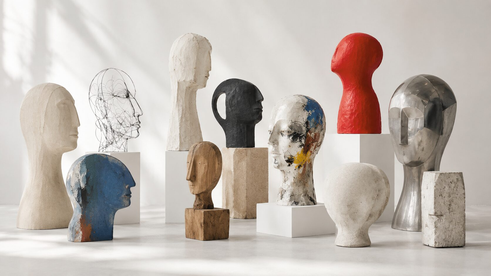

Psychologie · Goethe-Universität Frankfurt
Kein Mensch ist eins. Jeder Mensch ist ein eigenes Universum.
Mein Zugang
Mich fasziniert seit meiner Kindheit, dass wir dieselbe Welt erleben – und doch nie dieselbe Wirklichkeit teilen. Jeder Mensch trägt Erinnerungen, Sprache, Beziehungen und Erfahrungen in sich, die seine eigene Innenwelt formen. Kommunikation ist deshalb für mich mehr als Informationsaustausch. Sie ist der Versuch, Brücken zwischen verschiedenen Universen zu bauen.
Vielleicht führte mich genau deshalb der Weg zur Psychologie. Nicht, weil sie alle Antworten bereithält, sondern weil sie den Menschen in seiner ganzen Vielfalt ernst nimmt. Mich interessieren weniger einzelne Teilgebiete als ihre Verbindungen: Wie entsteht Identität? Wie verändert Sprache unser Selbstbild? Wie formen Gruppen unser Denken? Warum entstehen Kunst, Musik oder Literatur – und was erzählen sie über den Menschen?
Psychologie verstehe ich deshalb nicht als Gegenpol zu Kunst oder Musik, sondern als eine weitere Sprache, um menschliche Erfahrung zu beschreiben. Die wissenschaftliche Perspektive ergänzt für mich das, was Zeichnungen, Literatur oder Improvisation auf andere Weise sichtbar machen. Erst gemeinsam entsteht ein vollständigeres Bild.

Leitfragen
Was mich antreibt- 01
Wie erlebt jeder Mensch die Wirklichkeit — und was prägt dieses Erleben?
- 02
Wie kooperieren Menschen, und wie entsteht aus vielen Einzelnen ein Wir?
- 03
Was macht ein gutes und gesundes Leben aus?
- 04
Wie funktioniert Führung?
Ausgewählte Arbeiten
3 Arbeiten-
01
Identity Leadership und Sprache
Wie entsteht aus vielen Einzelnen ein gemeinsames »Wir«? Meine Bachelorarbeit untersuchte, wie Führungssprache kollektive Identität formt — und verschob damit dieselbe Frage, die mich zuvor am Individuum interessierte, auf Gruppen. Sprache beschreibt Gemeinschaft nicht nur, sie kann sie auch entstehen lassen.
Bachelorarbeit
Sozial- & Organisationspsychologie
-
02
Neuronale Grundlagen musikalischer Improvisation
Was geschieht im Gehirn, wenn eine Hand etwas spielt, das eine Sekunde zuvor noch nicht existierte? Mich interessierte dabei weniger die Musik selbst als Improvisation als menschlicher Ausdruck: Wie entstehen Kreativität und Spontaneität? Welche Prozesse ermöglichen es, dass innere Erfahrung unmittelbar in Klang übergeht?
-
03
Attention in Auditory Entrainment and its Effects on Perception
Gruppenprojekt zur auditiven Aufmerksamkeit und rhythmischen Synchronisation, vorgestellt als wissenschaftliches Poster an der Goethe-Universität Frankfurt. Mich interessierte dabei die Frage, wie Aufmerksamkeit unsere Wahrnehmung verändert — und wie stark unser Erleben von Prozessen beeinflusst wird, die uns oft gar nicht bewusst sind.
Artikel auf LinkedIn
Identity Leadership25.10.2026 · Identity Leadership in der Praxis
Was haben 5.300 Euro mit der Psychologie politischer Führung zu tun?
Die Linke will die Bezüge ihrer Abgeordneten deckeln. Aus sozialpsychologischer Sicht stellt das eine Grundfrage politischer Führung: Wie kann ich glaubwürdig für eine Gruppe stehen, deren Lebensrealität sich von meiner eigenen unterscheidet?
Auf LinkedIn lesen ↗
21.07.2026 · Identity Leadership · mit Erklärvideo
Führung beginnt mit einem „Wir“
Was Identity Leadership über Einfluss, Zugehörigkeit und gemeinsame Identität erklärt: Wie gelingt es Führungskräften, aus einzelnen Menschen ein gemeinsames „Wir“ zu machen? Ein Einblick in den theoretischen Rahmen meiner Bachelorarbeit an der Goethe-Universität Frankfurt, samt KI-generiertem Erklärvideo.
Auf LinkedIn lesen ↗
Als Experte befragt
F.A.S. · BILD · LandesärztekammerF.A.S.30.08.2026
Titelseite Rhein-Main & Hessen
„Den Leistungsdruck nicht mit in den Ruhestand nehmen."
Für die Frankfurter Allgemeine Sonntagszeitung habe ich erklärt, was psychologisch geschieht, wenn nach Jahrzehnten im Beruf die Rolle wegfällt, die das Selbstbild getragen hat — und warum der Ruhestand nicht zwangsläufig in eine Krise führen muss. Das Interview war der Aufmacher der Titelseite des Rhein-Main-Teils; die Fragen stellte Anaïs Muschter.
Interview auf faz.net lesen ↗
„Die Gefahr ist, dass mit dem Übergang in den Ruhestand ein großer Identitäts- und Rollenbruch stattfindet, auch sozial. In der Sozialpsychologie gibt es den Social Identity Approach. Das heißt, dass wir uns als Personen nicht nur über individuelle Eigenschaften definieren, sondern auch über unsere Zugehörigkeit zu verschiedenen sozialen Gruppen und Rollen."
Aus dem Interview — dieselbe Theorie, auf der auch meine Bachelorarbeit aufbaut
BILD am Sonntag18.10.2026
Seite 32 · auch auf bild.de
„Die Kunst, ein glücklicher Rentner zu sein"
In einem großen Report über das Leben nach dem Beruf ordne ich als Experte ein, warum der Übergang in den Ruhestand zu einem Identitäts- und Rollenbruch werden kann.
Artikel auf bild.de lesen ↗
„Entscheidend ist weniger, wie viel jemand gearbeitet hat, sondern wie viel seines bisherigen Alltags, seiner sozialen Einbindung und seines Selbstbildes an dieser Arbeit hing."
Aus dem Artikel in BILD am Sonntag
VortragMittwoch, 21.10.2026
Mainz
„Das Leben nach der Praxis – schon für den Ruhestand vorgesorgt?"
Auf Einladung der Landesärztekammer Rheinland-Pfalz und der Bezirksärztekammer Rheinhessen war ich als Wissenschaftler Teil der Diskussionsrunde für Ärztinnen und Ärzte und habe über die psychologische Seite des Übergangs in den Ruhestand gesprochen, gemeinsam mit einem Rechtsanwalt, einem Praxisberater und einem Steuerberater.
Beitrag der Landesärztekammer auf LinkedIn ↗
Haus der rheinland-pfälzischen Ärzteschaft
Anknüpfung an das F.A.S.-Interview zur Psychologie des Ruhestands
Mittlere Bleiche 40, Mainz
Studium & Stationen
Goethe-Universität FrankfurtPsychologie habe ich nie als Sammlung einzelner Fächer verstanden. Klinische Psychologie, Sozialpsychologie, Neurowissenschaften oder Organisationspsychologie beschreiben für mich unterschiedliche Ebenen derselben Wirklichkeit. Gemeinsam versuchen sie zu erklären, wie Menschen sich selbst verstehen, miteinander leben und Bedeutung schaffen.
1,2
B.Sc.-Schnitt
Top 5 %
der Kohorte
2×
Deutschlandstipendium
Studium 03
M.Sc. Psychologie
Arbeits- & Organisationspsychologie · Cognitive Neuroscience
B.A. Politikwissenschaft mit VWL
parallel als Doppelstudium
B.Sc. Psychologie
Schwerpunkt Klinische Psychologie & Psychotherapie · Bachelorarbeit bei Prof. Dr. Rolf van Dick
Praxis 03
Praktikum Klinische Psychologie
Praxis Sujata Amend-Sarkar · Diagnostik & Therapie-Assistenz
Wissenschaftliche Hilfskraft
Testsammlung, Bibliothek Psychologie & Sozialwissenschaften
Intensivkurs Forensische Psychiatrie
Fachbereich Psychologie, Goethe-Universität
Förderung 04
sdw-Stipendium
Studienförderwerk Klaus Murmann · Stiftung der Deutschen Wirtschaft
Deutschlandstipendium
Goethe-Universität Frankfurt · zweimal vergeben
e-fellows.net
Online-Stipendium & Karrierenetzwerk
GROW@Goethe
Berufliches Mentoring-Programm, Career Service
Engagement 01
Jugendleiter
Ev. Kinder- und Jugendwerk Heidelberg · drei internationale Jugendfreizeiten